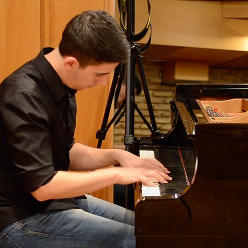

About
I started music classes at the age of 3 at the Philippos Nakas Conservatory, where I obtained degrees in classical piano, keyboard, and electric organ. I had a deep fascination with mathematics, programming, and computer hardware, and, growing up, I started exploring their intersection with music.
During my undergraduate years, I was fortunate to explore my passions further, and specialize and contribute to the scientific and artistic fields that most interest me. I studied in Abu Dhabi, Paris and New York, in cool places such as NYU's Music, Science, and Engineering Departments, IRCAM, and École Cortot.
I am currently a Sound and Music Computing Master's student at Universitat Pompeu Fabra. I most engaged with topics in audio processing and music information retrieval, such as audio-based music structure analysis, music recommendation systems, and audio-based searching and visualization in large music libraries. At the same time, I am obsessed with programming, so I am constantly involved in projects with data (not just audio signals, but also images, text, and others). I'm also keeping my interest in composing music, primarly through electronic and contemporary classical compositions that have been performed in Abu Dhabi, New York, and Athens, while doing piano performances from time to time.
Research
Projects
(active)

Audio-based hierarchical structure analysis and similarity
Methodologies for computing a hierarchical representation of music structure from the audio of music pieces and for defining a similarity metric between them

Cover song identification using automatic structure analysis
Utilizing the hierarchical structure similarity metrics to identify cover songs
Music similarity using automatic structure analysis
Identifying and comparing related structural segments among the structural hierarchy of a pair of pieces
Computational approaches for understanding and preserving music collections from MENA and East Africa
Digital music library audio-feature-based organization, indexing, visualization, and searcability

Music generation using Charles Koechlin's "Les chants de Nectaire"
Structure-centric automatic music generation from rich symbolic music data
Publications and Presentations
Utilizing Hierarchical Structure for Audio-Based Music Similarity
Plachouras, C.
Late-Breaking Demo, International Society of Music Information Retrieval (ISMIR) Conference 2021 (virtual)
Paper,
Video,
Poster,
Code

Mapping Timbre Space in Regional Music Collections using HPSS Decomposition
Ganguli, K.K., Plachouras, C., Sentürk, S., Eisenberg, A., & Guedes, C.
Proceedings of the 2nd International Conference on Timbre, Timbre 2020, Thessaloniki, Greece (virtual)
Paper
Computational Audio Analysis for Cultural Heritage Preservation
Plachouras, C.
Feature on the webpage of the Council on Undergraduate Research (CUR)
Article
Mapping the Sounds of the Swahili coast and the Arab Mashriq
Trochidis, K., Russell, B., Eisenberg, A. J., Ganguli, K., Gonez, O., Plachouras, C., Guedes, C., & Danielson, V.
TROMPA Poster presentation at the 6th Digital Libraries for Musicology event of ISMIR 2019, The Hague, Netherlands
Paper
Compositions
(selected)

New Time
Christos Plachouras, August 2020
YouTube
12 Preludes of Tonal Resolution for Piano
Christos Plachouras, August 2019
YouTube

Ascending
NYU Bleep Bloop, September 2019
YouTube
Piece for String Quartet
Omer Quartet, Live at NYUAD Blue Hall, March 2019
YouTube
Map in Music
Eunsu Choi (violin), Christos Plachouras (piano), Live at NYUAD Blue Hall, December 2017
YouTube
Performances
(selected)
Rachmaninoff - Piano Concerto No. 2, I. Moderato
Christos Plachouras, Iaonnis Potamousis, Live at NYUAD Blue Hall, December 2018
YouTube
Bach - Partita No. 2 in C minor, I. Simfonia
Christos Plachouras, Live at NYUAD Blue Hall, May 2018
YouTube

Messiaen - Vingt Regards - II. Regard de l'étoile
Christos Plachouras, Studio Odeon, Athens, October 2016
YouTube
Writing

Perspectives on Music Performance Anxiety
Why your stage fright uncovers deeper issues in music education and culture
Medium
Other

Composition and spatialization tool
A highly modular composition tool built in Max and python, developed during my course at IRCAM. It classifies live or pre-recorded sounds and provides an interface to retrieve them according to their spectral features, spatialize them, and processes them with various effects.
Code